Needle and Seat
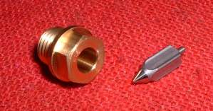
¶ Carburetor Fuel Valves, also known as Needle & Seat, fit to the Carburetor in one of three ways:
- Screwed in
- Pressed in
- Held in with a clip and screw
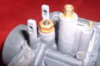 Screwed in Needle & Seat |
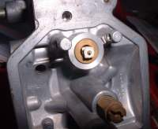 Pressed in Needle & Seat |
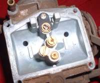 Needle & Seat held in with a clip and screw |
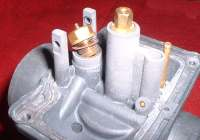 screwed in Needle & Seat |
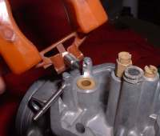 Pressed in Needle & Seat |
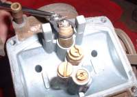 Needle & Seat held in with a clip and screw |
The Fuel inlet needles come in two forms:
- Steel Tip
- Rubber Tip
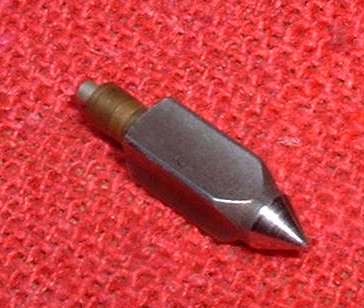 Steel Tip Needle |
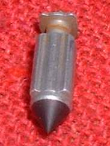 Rubber Tip Needle |
Needle and Seats also come in different flow sizes. There are an astounding number of different Fuel Valve Needles. You would think four or five types would do it but no. Rubber Tip, Steel Tip and maybe a big one and a little one for more or less fuel flow but no. There must be a reason for so many seemingly similar Needles. However, if there is, I sure don't know what it would be. Maybe it is just to sell more parts, you think?
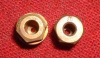 1.5 & 2.0 Needle Seats |
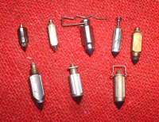 Different Needles |
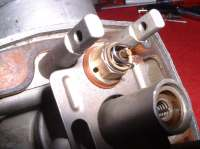 Needle Clipped to Seat |
I only know of one really innovative Fuel Valve. The Grose-Jet. I have only used it on one or two Carburetors and they worked just fine. You can still get them for some Carburetors but they are getting hard to find. The company who made them is still around but I don't know if they are still making them.
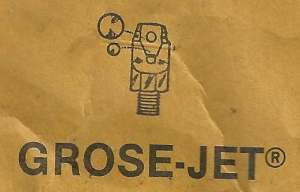 Grose-Jet 1 |
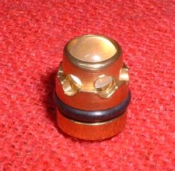 Grose-Jet 2 |
About the only thing you need to watch for on Jet Needles is wear on the end of the Needle. When you see the ring it is time to replace them. Another thing to remember is that very small bits of rust or dirt, from a dirty gas tank, can get caught on the seat of the Fuel Valve. This makes the Carburetor over flow. If this happens, take a plastic hammer or the plastic handle end of a screw driver and tap the Carburetor sharply. This will dislodge the obstruction and allow the Needle to seal against the seat. If, after tapping the Carburetor, it still leaks you need a new Needle & Seat.
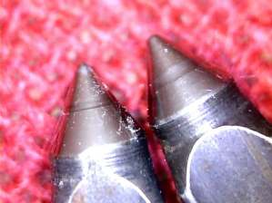 Worn Fuel Valve Needles |
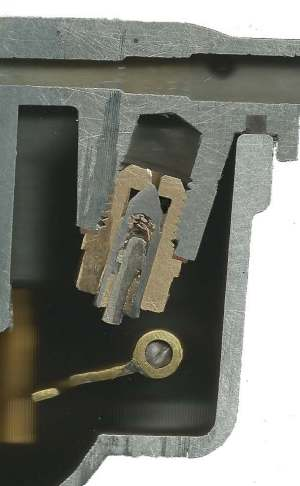 Needle & Seat Sectioned |
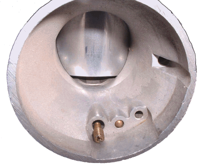
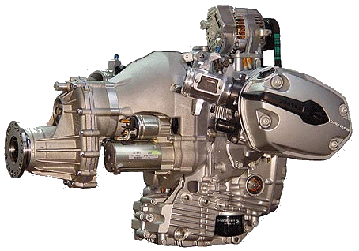 |
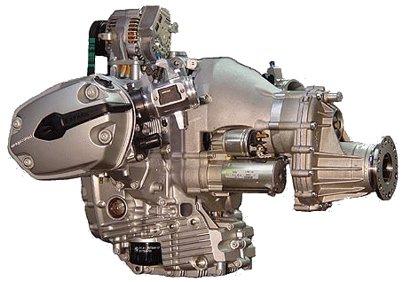 |
Copyright © 1999-2015 dansmc.com. All rights reserved.